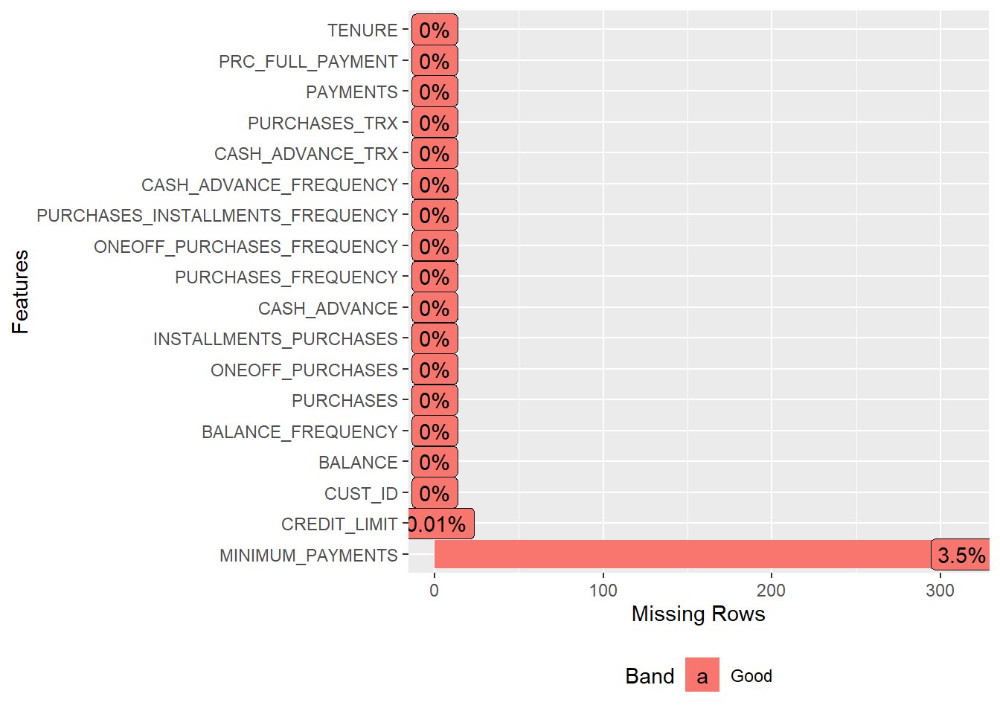

K Means Clustering for Credit Card Data
Kudakwashe Nyikadzino
The data set used for this analysis is credit card usage. The data contains behavioural variables for each customer’s credit card usage. The clustering exercise is used to segment customers based on their credit card usage. This segmentation can be used to implement the appropriate marketing strategy for each group of customer for example.
Load required libraries
library(DataExplorer)
library(dplyr)
library(NbClust)
library(factoextra)
library(ggplot2)
library(cluster)
library(ggfortify)
options(max.print = 100)Loading credit card data
credit_data = read.csv("CC GENERAL.csv", header = TRUE)Have a view of the data
head(credit_data)## CUST_ID BALANCE BALANCE_FREQUENCY PURCHASES ONEOFF_PURCHASES
## 1 C10001 40.90075 0.818182 95.40 0.00
## 2 C10002 3202.46742 0.909091 0.00 0.00
## 3 C10003 2495.14886 1.000000 773.17 773.17
## 4 C10004 1666.67054 0.636364 1499.00 1499.00
## 5 C10005 817.71434 1.000000 16.00 16.00
## INSTALLMENTS_PURCHASES CASH_ADVANCE PURCHASES_FREQUENCY
## 1 95.40 0.000 0.166667
## 2 0.00 6442.945 0.000000
## 3 0.00 0.000 1.000000
## 4 0.00 205.788 0.083333
## 5 0.00 0.000 0.083333
## ONEOFF_PURCHASES_FREQUENCY PURCHASES_INSTALLMENTS_FREQUENCY
## 1 0.000000 0.083333
## 2 0.000000 0.000000
## 3 1.000000 0.000000
## 4 0.083333 0.000000
## 5 0.083333 0.000000
## CASH_ADVANCE_FREQUENCY CASH_ADVANCE_TRX PURCHASES_TRX CREDIT_LIMIT
## 1 0.000000 0 2 1000
## 2 0.250000 4 0 7000
## 3 0.000000 0 12 7500
## 4 0.083333 1 1 7500
## 5 0.000000 0 1 1200
## PAYMENTS MINIMUM_PAYMENTS PRC_FULL_PAYMENT TENURE
## 1 201.8021 139.5098 0.000000 12
## 2 4103.0326 1072.3402 0.222222 12
## 3 622.0667 627.2848 0.000000 12
## 4 0.0000 NA 0.000000 12
## 5 678.3348 244.7912 0.000000 12
## [ reached getOption("max.print") -- omitted 1 row ]tail(credit_data)## CUST_ID BALANCE BALANCE_FREQUENCY PURCHASES ONEOFF_PURCHASES
## 8945 C19185 193.57172 0.833333 1012.73 1012.73
## 8946 C19186 28.49352 1.000000 291.12 0.00
## 8947 C19187 19.18322 1.000000 300.00 0.00
## 8948 C19188 23.39867 0.833333 144.40 0.00
## 8949 C19189 13.45756 0.833333 0.00 0.00
## INSTALLMENTS_PURCHASES CASH_ADVANCE PURCHASES_FREQUENCY
## 8945 0.00 0.00000 0.333333
## 8946 291.12 0.00000 1.000000
## 8947 300.00 0.00000 1.000000
## 8948 144.40 0.00000 0.833333
## 8949 0.00 36.55878 0.000000
## ONEOFF_PURCHASES_FREQUENCY PURCHASES_INSTALLMENTS_FREQUENCY
## 8945 0.333333 0.000000
## 8946 0.000000 0.833333
## 8947 0.000000 0.833333
## 8948 0.000000 0.666667
## 8949 0.000000 0.000000
## CASH_ADVANCE_FREQUENCY CASH_ADVANCE_TRX PURCHASES_TRX CREDIT_LIMIT
## 8945 0.000000 0 2 4000
## 8946 0.000000 0 6 1000
## 8947 0.000000 0 6 1000
## 8948 0.000000 0 5 1000
## 8949 0.166667 2 0 500
## PAYMENTS MINIMUM_PAYMENTS PRC_FULL_PAYMENT TENURE
## 8945 0.00000 NA 0.00 6
## 8946 325.59446 48.88636 0.50 6
## 8947 275.86132 NA 0.00 6
## 8948 81.27078 82.41837 0.25 6
## 8949 52.54996 55.75563 0.25 6
## [ reached getOption("max.print") -- omitted 1 row ]str(credit_data)## 'data.frame': 8950 obs. of 18 variables:
## $ CUST_ID : Factor w/ 8950 levels "C10001","C10002",..: 1 2 3 4 5 6 7 8 9 10 ...
## $ BALANCE : num 40.9 3202.5 2495.1 1666.7 817.7 ...
## $ BALANCE_FREQUENCY : num 0.818 0.909 1 0.636 1 ...
## $ PURCHASES : num 95.4 0 773.2 1499 16 ...
## $ ONEOFF_PURCHASES : num 0 0 773 1499 16 ...
## $ INSTALLMENTS_PURCHASES : num 95.4 0 0 0 0 ...
## $ CASH_ADVANCE : num 0 6443 0 206 0 ...
## $ PURCHASES_FREQUENCY : num 0.1667 0 1 0.0833 0.0833 ...
## $ ONEOFF_PURCHASES_FREQUENCY : num 0 0 1 0.0833 0.0833 ...
## $ PURCHASES_INSTALLMENTS_FREQUENCY: num 0.0833 0 0 0 0 ...
## $ CASH_ADVANCE_FREQUENCY : num 0 0.25 0 0.0833 0 ...
## $ CASH_ADVANCE_TRX : int 0 4 0 1 0 0 0 0 0 0 ...
## $ PURCHASES_TRX : int 2 0 12 1 1 8 64 12 5 3 ...
## $ CREDIT_LIMIT : num 1000 7000 7500 7500 1200 1800 13500 2300 7000 11000 ...
## $ PAYMENTS : num 202 4103 622 0 678 ...
## $ MINIMUM_PAYMENTS : num 140 1072 627 NA 245 ...
## $ PRC_FULL_PAYMENT : num 0 0.222 0 0 0 ...
## $ TENURE : int 12 12 12 12 12 12 12 12 12 12 ...summary(credit_data)## CUST_ID BALANCE BALANCE_FREQUENCY PURCHASES
## C10001 : 1 Min. : 0.0 Min. :0.0000 Min. : 0.00
## C10002 : 1 1st Qu.: 128.3 1st Qu.:0.8889 1st Qu.: 39.63
## C10003 : 1 Median : 873.4 Median :1.0000 Median : 361.28
## C10004 : 1 Mean : 1564.5 Mean :0.8773 Mean : 1003.20
## C10005 : 1 3rd Qu.: 2054.1 3rd Qu.:1.0000 3rd Qu.: 1110.13
## ONEOFF_PURCHASES INSTALLMENTS_PURCHASES CASH_ADVANCE
## Min. : 0.0 Min. : 0.0 Min. : 0.0
## 1st Qu.: 0.0 1st Qu.: 0.0 1st Qu.: 0.0
## Median : 38.0 Median : 89.0 Median : 0.0
## Mean : 592.4 Mean : 411.1 Mean : 978.9
## 3rd Qu.: 577.4 3rd Qu.: 468.6 3rd Qu.: 1113.8
## PURCHASES_FREQUENCY ONEOFF_PURCHASES_FREQUENCY
## Min. :0.00000 Min. :0.00000
## 1st Qu.:0.08333 1st Qu.:0.00000
## Median :0.50000 Median :0.08333
## Mean :0.49035 Mean :0.20246
## 3rd Qu.:0.91667 3rd Qu.:0.30000
## PURCHASES_INSTALLMENTS_FREQUENCY CASH_ADVANCE_FREQUENCY CASH_ADVANCE_TRX
## Min. :0.0000 Min. :0.0000 Min. : 0.000
## 1st Qu.:0.0000 1st Qu.:0.0000 1st Qu.: 0.000
## Median :0.1667 Median :0.0000 Median : 0.000
## Mean :0.3644 Mean :0.1351 Mean : 3.249
## 3rd Qu.:0.7500 3rd Qu.:0.2222 3rd Qu.: 4.000
## PURCHASES_TRX CREDIT_LIMIT PAYMENTS MINIMUM_PAYMENTS
## Min. : 0.00 Min. : 50 Min. : 0.0 Min. : 0.02
## 1st Qu.: 1.00 1st Qu.: 1600 1st Qu.: 383.3 1st Qu.: 169.12
## Median : 7.00 Median : 3000 Median : 856.9 Median : 312.34
## Mean : 14.71 Mean : 4494 Mean : 1733.1 Mean : 864.21
## 3rd Qu.: 17.00 3rd Qu.: 6500 3rd Qu.: 1901.1 3rd Qu.: 825.49
## PRC_FULL_PAYMENT TENURE
## Min. :0.0000 Min. : 6.00
## 1st Qu.:0.0000 1st Qu.:12.00
## Median :0.0000 Median :12.00
## Mean :0.1537 Mean :11.52
## 3rd Qu.:0.1429 3rd Qu.:12.00
## [ reached getOption("max.print") -- omitted 2 rows ]plot_str(credit_data)
plot_intro(credit_data)plot_missing(credit_data)
Replace all NAs with 0
credit_data = credit_data %>% replace(is.na(.),0)
plot_missing(credit_data)Scale the data and remove factor variable CustID
credit_data_scaled = scale(subset(credit_data, select = -c(CUST_ID)))
head(credit_data_scaled)## BALANCE BALANCE_FREQUENCY PURCHASES ONEOFF_PURCHASES
## 1 -0.7319485 -0.2494205 -0.4248760 -0.3569141
## 2 0.7869169 0.1343172 -0.4695256 -0.3569141
## 3 0.4471102 0.5180549 -0.1076622 0.1088824
## 4 0.0490964 -1.0168960 0.2320449 0.5461589
## 5 -0.3587553 0.5180549 -0.4620372 -0.3472749
## INSTALLMENTS_PURCHASES CASH_ADVANCE PURCHASES_FREQUENCY
## 1 -0.3490593 -0.4667595 -0.8064453
## 2 -0.4545508 2.6054589 -1.2216898
## 3 -0.4545508 -0.4667595 1.2697723
## 4 -0.4545508 -0.3686327 -1.0140688
## 5 -0.4545508 -0.4667595 -1.0140688
## ONEOFF_PURCHASES_FREQUENCY PURCHASES_INSTALLMENTS_FREQUENCY
## 1 -0.6786229 -0.7072736
## 2 -0.6786229 -0.9169440
## 3 2.6733017 -0.9169440
## 4 -0.3992970 -0.9169440
## 5 -0.3992970 -0.9169440
## CASH_ADVANCE_FREQUENCY CASH_ADVANCE_TRX PURCHASES_TRX CREDIT_LIMIT
## 1 -0.6753111 -0.4760432 -0.5113047 -0.9601598
## 2 0.5739307 0.1100677 -0.5917628 0.6886799
## 3 -0.6753111 -0.4760432 -0.1090140 0.8260832
## 4 -0.2588989 -0.3295155 -0.5515337 0.8260832
## 5 -0.6753111 -0.4760432 -0.5515337 -0.9051985
## PAYMENTS MINIMUM_PAYMENTS PRC_FULL_PAYMENT TENURE
## 1 -0.5289492 -0.2972931 -0.5255216 0.3606594
## 2 0.8185964 0.1020367 0.2342138 0.3606594
## 3 -0.3837833 -0.0884844 -0.5255216 0.3606594
## 4 -0.5986548 -0.3570150 -0.5255216 0.3606594
## 5 -0.3643474 -0.2522238 -0.5255216 0.3606594
## [ reached getOption("max.print") -- omitted 1 row ]plot_str(as.data.frame(credit_data_scaled))A graphical view of the data
plot_histogram(credit_data_scaled, ncol = 3, nrow = 3)Determining the number of clusters
seed = 1234
set.seed(seed)
nclusters = NbClust(credit_data_scaled, min.nc = 2, max.nc = 5, method = "kmeans")
## *** : The Hubert index is a graphical method of determining the number of clusters.
## In the plot of Hubert index, we seek a significant knee that corresponds to a
## significant increase of the value of the measure i.e the significant peak in Hubert
## index second differences plot.
## ## *** : The D index is a graphical method of determining the number of clusters.
## In the plot of D index, we seek a significant knee (the significant peak in Dindex
## second differences plot) that corresponds to a significant increase of the value of
## the measure.
##
## *******************************************************************
## * Among all indices:
## * 8 proposed 2 as the best number of clusters
## * 6 proposed 3 as the best number of clusters
## * 3 proposed 4 as the best number of clusters
## * 6 proposed 5 as the best number of clusters
##
## ***** Conclusion *****
##
## * According to the majority rule, the best number of clusters is 2
##
##
## *******************************************************************Visualise number of clusters
set.seed(seed)
fviz_nbclust(subset(credit_data, select = -c(CUST_ID)), kmeans, method = "wss")Create dataset with 2 clusters
set.seed(seed)
credit_clust2 = kmeans(credit_data_scaled, centers = 2, nstart = 10,iter.max = 1000, algorithm = "Lloyd")
credit_clust2## K-means clustering with 2 clusters of sizes 5237, 3713
##
## Cluster means:
## BALANCE BALANCE_FREQUENCY PURCHASES ONEOFF_PURCHASES
## 1 0.06257995 -0.2047935 -0.3397108 -0.2352350
## 2 -0.08826587 0.2888509 0.4791450 0.3317872
## INSTALLMENTS_PURCHASES CASH_ADVANCE PURCHASES_FREQUENCY
## 1 -0.3708736 0.1818311 -0.7334872
## 2 0.5230986 -0.2564636 1.0345469
## ONEOFF_PURCHASES_FREQUENCY PURCHASES_INSTALLMENTS_FREQUENCY
## 1 -0.3804022 -0.6539609
## 2 0.5365381 0.9223790
## CASH_ADVANCE_FREQUENCY CASH_ADVANCE_TRX PURCHASES_TRX CREDIT_LIMIT
## 1 0.2713543 0.1902565 -0.4563959 -0.1187590
## 2 -0.3827316 -0.2683472 0.6437235 0.1675036
## PAYMENTS MINIMUM_PAYMENTS PRC_FULL_PAYMENT TENURE
## 1 -0.1120354 -0.007789314 -0.2834074 -0.08520623
## 2 0.1580202 0.010986436 0.3997319 0.12017910
##
## Clustering vector:
## 1 2 3 4 5 6 7 8 9 10 11 12 13 14 15 16 17 18
## 1 1 2 1 1 2 2 2 1 1 2 1 2 2 1 1 1 1
## 19 20 21 22 23 24 25 26 27 28 29 30 31 32 33 34 35 36
## 2 2 1 2 2 2 1 2 1 2 1 1 2 2 1 2 2 1
## 37 38 39 40 41 42 43 44 45 46 47 48 49 50 51 52 53 54
## 1 2 1 1 1 1 1 1 2 1 1 1 2 1 1 2 1 1
## 55 56 57 58 59 60 61 62 63 64 65 66 67 68 69 70 71 72
## 1 1 1 2 1 1 1 1 1 1 2 1 1 1 2 1 2 2
## 73 74 75 76 77 78 79 80 81 82 83 84 85 86 87 88 89 90
## 1 1 1 2 2 2 1 1 2 1 1 2 2 2 2 2 1 1
## 91 92 93 94 95 96 97 98 99 100
## 2 1 1 1 1 1 2 1 1 1
## [ reached getOption("max.print") -- omitted 8850 entries ]
##
## Within cluster sum of squares by cluster:
## [1] 57629.62 70139.93
## (between_SS / total_SS = 16.0 %)
##
## Available components:
##
## [1] "cluster" "centers" "totss" "withinss"
## [5] "tot.withinss" "betweenss" "size" "iter"
## [9] "ifault"Add cluster to data set
credit_data$CLUSTER = credit_clust2$cluster
head(credit_data)## CUST_ID BALANCE BALANCE_FREQUENCY PURCHASES ONEOFF_PURCHASES
## 1 C10001 40.90075 0.818182 95.40 0.00
## 2 C10002 3202.46742 0.909091 0.00 0.00
## 3 C10003 2495.14886 1.000000 773.17 773.17
## 4 C10004 1666.67054 0.636364 1499.00 1499.00
## 5 C10005 817.71434 1.000000 16.00 16.00
## INSTALLMENTS_PURCHASES CASH_ADVANCE PURCHASES_FREQUENCY
## 1 95.40 0.000 0.166667
## 2 0.00 6442.945 0.000000
## 3 0.00 0.000 1.000000
## 4 0.00 205.788 0.083333
## 5 0.00 0.000 0.083333
## ONEOFF_PURCHASES_FREQUENCY PURCHASES_INSTALLMENTS_FREQUENCY
## 1 0.000000 0.083333
## 2 0.000000 0.000000
## 3 1.000000 0.000000
## 4 0.083333 0.000000
## 5 0.083333 0.000000
## CASH_ADVANCE_FREQUENCY CASH_ADVANCE_TRX PURCHASES_TRX CREDIT_LIMIT
## 1 0.000000 0 2 1000
## 2 0.250000 4 0 7000
## 3 0.000000 0 12 7500
## 4 0.083333 1 1 7500
## 5 0.000000 0 1 1200
## PAYMENTS MINIMUM_PAYMENTS PRC_FULL_PAYMENT TENURE CLUSTER
## 1 201.8021 139.5098 0.000000 12 1
## 2 4103.0326 1072.3402 0.222222 12 1
## 3 622.0667 627.2848 0.000000 12 2
## 4 0.0000 0.0000 0.000000 12 1
## 5 678.3348 244.7912 0.000000 12 1
## [ reached getOption("max.print") -- omitted 1 row ]Get average values for each cluster to determine the average customer profile for each cluster
credit_data_profile = aggregate(subset(credit_data, select = -c(CUST_ID)), list(credit_data$CLUSTER), FUN = "mean")
print(credit_data_profile, digits = 2)## Group.1 BALANCE BALANCE_FREQUENCY PURCHASES ONEOFF_PURCHASES
## 1 1 1695 0.83 277 202
## 2 2 1381 0.95 2027 1143
## INSTALLMENTS_PURCHASES CASH_ADVANCE PURCHASES_FREQUENCY
## 1 76 1360 0.20
## 2 884 441 0.91
## ONEOFF_PURCHASES_FREQUENCY PURCHASES_INSTALLMENTS_FREQUENCY
## 1 0.089 0.10
## 2 0.363 0.73
## CASH_ADVANCE_FREQUENCY CASH_ADVANCE_TRX PURCHASES_TRX CREDIT_LIMIT
## 1 0.189 4.5 3.4 4062
## 2 0.059 1.4 30.7 5103
## PAYMENTS MINIMUM_PAYMENTS PRC_FULL_PAYMENT TENURE CLUSTER
## 1 1409 816 0.071 11 1
## 2 2191 860 0.271 12 2Visualising the clusters
fviz_cluster(credit_clust2, data = subset(credit_data, select = -c(CUST_ID, CLUSTER)), geom = "point", main = "Credit Card Data Clusters")